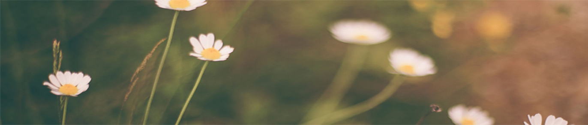
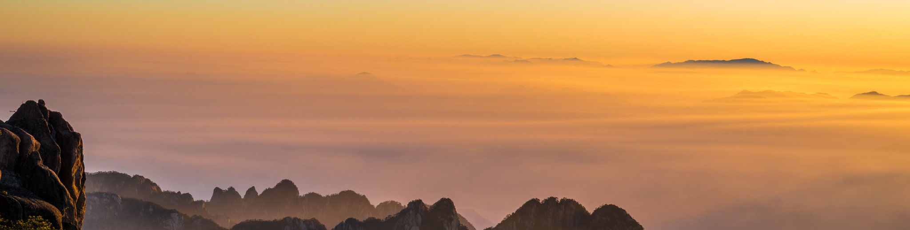

黄山游
做攻略
去黄山之前，在家查了一些有关于黄山的资料以及很所热心网友分享他们的旅游经验，制定了适合自己的旅游计划^^。由于达到黄山市的时间计划是下午，所以在出发前需要提前预约的入住酒店。并不是旅游旺季，所以酒店应该不是很难订到，我的打算是每晚住的地方都在就近找，这样比较方便省时。
爬黄山，顾名思义是“爬”，所以一定要准备登山鞋或者自己认为最舒服的鞋子，之前有过爬山的经历，但是爬普通的山，穿了一双皮鞋磨出好几个水泡，所以鞋子很重要;其次就是爬山之前一定准备充足的水，虽然水很重，但黄山到处都是阶梯，即使你乘坐索道，也需要走大段的路，所以一定要带上水；黄山上气候多变，雨衣也是一定不能缺少的；相机是旅行必备品，黄山无处不风景，带上一个相机，将美丽的瞬间珍藏；其他的就是一些必须的洗漱用品了。^^
爬黄山
游览黄山,一般在山上安排两天时间足够了。第一天上山,晚上住在山上,第二天看完日出后下山,一路轻松悠闲,景色令人心旷神怡。
黄山上山通常有两条线路:
一条是从前山慈光阁乘坐缆车或徒步上山,先经好汉坡至玉屏楼迎客松游览,然后往上至莲花峰,过百步云梯后路分两条,一条经一线天至光明顶,另一条经鳌鱼洞至光明顶,再经西海、北海,从后山白鹅岭乘坐缆车或步行下山。此线路开始阶段就能一睹黄山景区的精华,但行程以上山为主,而且至大部分宾馆落脚点距离较远,体力消耗相对较大。另一条是从后山云谷寺乘坐缆车或徒步上山,到白鹅岭后,再经过始信峰、狮子峰到北海景区,然后经飞来石、光明顶、莲花峰、鳌鱼洞等景点,至玉屏楼下山。这条线路实际上是前一条路的反走,因上山不久便是宾馆聚集区,停留调整比较方便,之后路段上下山间隔,以下山居多,走起来相对轻松,而且沿途景色渐入佳境,越到后面景色越精彩。但云谷索道因客流量较前山小,所以排队等候的时间会长些,旺季时,排上2、3个小时是很正常的。建议体力差者可选择此条线路。
看晚霞:排云亭、丹霞峰。 看云海:玉屏楼观前海、清凉台观后海、白鹅岭观东海、排云亭看西海、光明顶看天海。 看雪景:玉屏楼、北海、松谷、云谷和温泉。 看日出:在黄山看日出最理想的地点是北海的始信峰和狮子峰,其次是光明顶和玉屏楼。看日落:冬季,约下午17点,在光明顶看为佳。如能通过梦幻景区,在此途中观赏,独享红彤彤的太阳,景致尤佳。
美食推荐
end